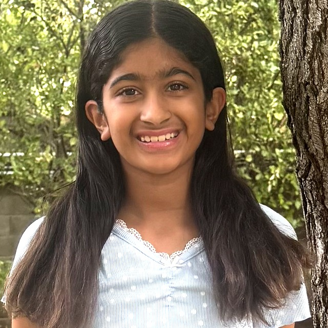
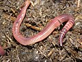
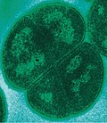
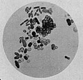

MarsWorm

Designing a microbe that could do an earthworm’s job on Mars.
MarsWorm stands for Making Arid Regolith into Soil, With Organisms Redesigned for Mars.
A student project for the 3M Young Scientist Challenge 2027.
The problem
A Mars crew would eat about half a ton of food per person per year, and ships can only leave Earth for Mars about every 26 months. You cannot pack enough lunch. Any colony that stays has to grow its own food, and growing food needs soil.
Mars has dirt. Mars does not have soil. Martian regolith is crushed rock. It has no dead plant matter, no living microbes, no nitrogen a plant can take up, and about 0.5–1% perchlorate salt, which is poisonous. Plant a seed in it and nothing happens.
So the real job is not farming on Mars. It is making soil on Mars, using something that copies itself, because shipping soil from Earth is the same weight problem all over again.
On Earth, an earthworm does this job, and most of the chemistry is really done by the microbes in its gut. On Mars an earthworm dies immediately: it freezes, it dries out, the radiation damages it, the perchlorate poisons it, and there is nothing for it to eat.
The two requirements
Anything that could make soil on Mars has to satisfy two separate requirements at the same time, and they have nothing to do with each other.
- Requirement 1: do the work. Break down dead material, unlock the nitrogen, iron and phosphorus that are trapped in the rock, and leave behind something a root can actually grow through. This is the earthworm’s job, and it is scored here against 10 specific abilities.
- Requirement 2: stay alive while doing it. At about −60 °C, with almost no water, no oxygen worth breathing, radiation coming straight through the thin atmosphere, perchlorate salt in the ground, and nothing to eat. Scored against 13 specific abilities.
Plenty of organisms on Earth are excellent at one of these. Every one of them is a specialist. The question is whether anything is good at both, because a champion at one and a failure at the other is no use on Mars.

Does the work. Dies on Mars within minutes.

Survives radiation that kills anything else. Does nothing for soil.

A soil bacterium that already carries 13 of the 37 genes.
What the project has done so far
Step 1: search Earth first. Before designing anything, we went through the organisms on Earth whose genomes have been sequenced, looking for one that already does this. 322 of them meet part of one requirement or the other. Not one meets both in full.
Step 2: build the list of parts. If no single organism can do both, borrow from the ones that each do a piece. Every ability in the two requirements was traced back to a real gene in a real organism that already uses it. That comes to 37 genes in all, and between them they cover both requirements completely.
Step 3: pick something to put them in. Azotobacter vinelandii is an ordinary soil bacterium that already pulls nitrogen out of the air, and it turns out to carry 13 of the 37 genes by itself. Starting from a bacterium that is already a third of the way there leaves 24 genes to add.
Step 4: test the foundations. Steps 2 and 3 rest on two assumptions that have never been tested, so there is an experiment for each. Both are written up and ready to run.
- Assumption 1: we are assuming that adding life to dead dirt turns it into soil. Nobody has shown that it does. So we fill fifteen cups with MGS-1 Martian regolith simulant, give each a different amount of “life”: nothing, dead leaves, leaves plus live compost worms, or leaves plus worm castings. Then sow radish seeds and weigh the dried seedlings. Leaves alone against leaves plus worms is the pair that matters: if the cups with living worms grow the heaviest seedlings, life is what turns dead dirt into soil.
- Assumption 2: we are assuming that an ability comes along with its gene. That has never been checked here either. To find out, we compare two strains of C. elegans roundworm: a normal one, and a ready-made one with the drying-protection gene switched off. Half the worms of each strain are dried out first, and then every group is hit with UV light, freezing or Martian dust and the survivors counted a day later. Drying should protect the normal worms. Thus, if that protection disappears in the strain missing the gene, it would prove that the ability really does travel with the gene.
Step 5: plan the build. Adding the 24 genes to Azotobacter vinelandii would make a genetically modified bacterium carrying all 37. That would be the first thing to meet both requirements at once: it does the work of turning dead rock into soil, and it survives the conditions while doing it. That organism is what the project is named after. MarsWorm: an earthworm’s job, done by a microbe, on Mars.
The genes would go in as six groups, one group at a time, and each group has to pass its own test before the next is ordered. If a group fails, it costs one group and not the whole organism.
Each stage in full: Stage 1 · Stage 2 · Stage 3 · Stage 4 · Stage 5 · Stage 6 · or all six at once
The two things being asked for
- Ask 1: would you be willing to read the design and tell us where it falls down? About 30 minutes, and there are three specific questions rather than a general request for thoughts. If your answer is that it will not work, that is genuinely the most useful thing we could hear, and we would write it up as a finding.
- Ask 2: would your lab consider hosting a student for a few hours a day, a couple of days a week? Only for the two experiments described above. The cups mostly just sit on a shelf between visits, so the time actually spent in the lab is short, and we can fit it around whatever suits you. Both are BSL-1 and neither involves any genetic modification. One is compost worms in cups; the other compares two roundworm strains ordered from a stock centre. Nothing is engineered or built, and we would bring our own materials.
Lastly, please know that we are not asking anyone to build the microbe. We understand that would be a serious research project in its own right, and far more than it would be fair to ask of anyone. It is shared here simply as a design, in the hope that people who know this territory far better than we do might be kind enough to tell us where it goes wrong.
Saanvi Pagadala · Granite Bay, CA